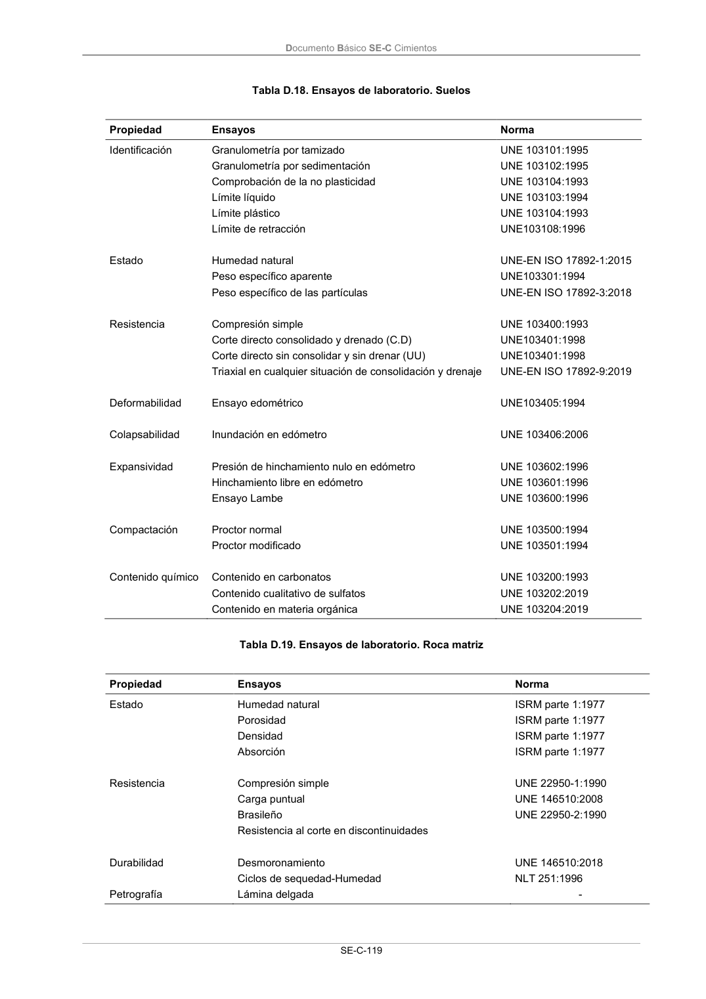

DB-SE-C Cimientos · edición 2019-12-20 · capa oficial
Documento DB-SE-C-oficial · SHA-256 del PDF a71133f4b0dca253e45ea3071c70f2a512354bcc5cd841bf89b1a502f567ac5e
Página física 124 de 165.
Copia fiel del PDF fuente · Fuente oficial
Ficha de la disposición en la fuente oficial
Formato: Texto de la página (Markdown)
Documento Básico SE-C Cimientos SE-C-119 Tabla D.18. Ensayos de laboratorio. Suelos Propiedad Ensayos Norma Identificación Estado Resistencia Deformabilidad Colapsabilidad Expansividad Compactación Contenido químico Granulometría por tamizado Granulometría por sedimentación Comprobación de la no plasticidad Límite líquido Límite plástico Límite de retracción Humedad natural Peso específico aparente Peso específico de las partículas Compresión simple Corte directo consolidado y drenado (C.D) Corte directo sin consolidar y sin drenar (UU) Triaxial en cualquier situación de consolidación y drenaje Ensayo edométrico Inundación en edómetro Presión de hinchamiento nulo en edómetro Hinchamiento libre en edómetro Ensayo Lambe Proctor normal Proctor modificado Contenido en carbonatos Contenido cualitativo de sulfatos Contenido en materia orgánica UNE 103101:1995 UNE 103102:1995 UNE 103104:1993 UNE 103103:1994 UNE 103104:1993 UNE103108:1996 UNE-EN ISO 17892-1:2015 UNE103301:1994 UNE-EN ISO 17892-3:2018 UNE 103400:1993 UNE103401:1998 UNE103401:1998 UNE-EN ISO 17892-9:2019 UNE103405:1994 UNE 103406:2006 UNE 103602:1996 UNE 103601:1996 UNE 103600:1996 UNE 103500:1994 UNE 103501:1994 UNE 103200:1993 UNE 103202:2019 UNE 103204:2019 Tabla D.19. Ensayos de laboratorio. Roca matriz Propiedad Ensayos Norma Estado Resistencia Durabilidad Petrografía Humedad natural Porosidad Densidad Absorción Compresión simple Carga puntual Brasileño Resistencia al corte en discontinuidades Desmoronamiento Ciclos de sequedad-Humedad Lámina delgada ISRM parte 1:1977 ISRM parte 1:1977 ISRM parte 1:1977 ISRM parte 1:1977 UNE 22950-1:1990 UNE 146510:2008 UNE 22950-2:1990 UNE 146510:2018 NLT 251:1996 -
